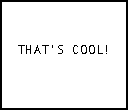
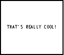

| HOME >> Tutorials >> Tutorial 24: Useful Characters |
Introduction:
You probably noticed this already, but there are some characters on your keyboard that aren't on your calculator. In this tutorial, I'm going to show you two commands that are used to do other things, but can be used as characters. These two characters are extremely useful because we use them a lot in text. The two commands are:
New Commands:
| ' | An apostrophe or designates minutes (D) in DMS entry notation |
| ! | An exclamation mark or factorial |
The Codes:
There's just going to be one simple code for this tutorial. The code will use both the apostrophe and the exclamation mark in one sentence.
| : | For AShell, SOS, and TI-Explorer |
| AxesOff | Turns the graph axes off |
| FnOff | Deselects all the Y= functions |
| ClrHome | Clears the home screen |
| ClrDraw | Clears the graph screen of all drawings |
| Lbl 1 | |
| Output(4,3,"THAT'S COOL! | Displays "THAT'S COOL!" |
| Pause | Suspends program and waits for user to press |
| Text(29,13,"THAT'S REALLY COOL! | Displays "THAT'S REALLY COOL!" |
 and 
Have you ever thought about using lowercase lettering in your programs? Have you ever wanted to use them to give your program a unique twist? Well, there are some lowercase letters available on the calculator, but they are difficult to find. The letters you can use are a, b, c, d, e, i, n, p, r, s, t, u, v, w, and z. By the way, the i is not a regular i, but more like an italicized one. It's normally used for imaginary and complex numbers. Below is a listing of where you can find each letter.
| a | Press |
| b | Press |
| c | Press |
| d | Press |
| e | Press |
| i | Press |
| n | Press |
| p | Press |
| r | Press |
| s | Press |
| t | Press |
| u | Press |
| v | Press |
| w | Press |
| z | Press |
However, these are all of the lowercase letters you can get. The ones listed above are just the letters by themselves. You can also get a lowercase x and y, but they have lines on top of them. You can access those two letters by pressing  , scrolling down to 5:Statistics..., and choosing 2: or 5:. I'm not going to make any code using the lowercase letters, because they are used just like the uppercase ones. Plus, I'm pretty sure that you are able to do it on your own.
, scrolling down to 5:Statistics..., and choosing 2: or 5:. I'm not going to make any code using the lowercase letters, because they are used just like the uppercase ones. Plus, I'm pretty sure that you are able to do it on your own.
Conclusion:
That was a pretty quick tutorial. I wanted to use the two characters in some many programs in the previous tutorials, but I could because I had not gone over them yet and I was not sure if you knew where to find them. In the next tutorial, we are going to be changing the modes of the calculator in the beginnings of programs.
If you do not understand a particular part in this lesson, have suggestions, or find any problems please contact me.
 |
 |
| Overview 3.0 | Tutorial 25 |